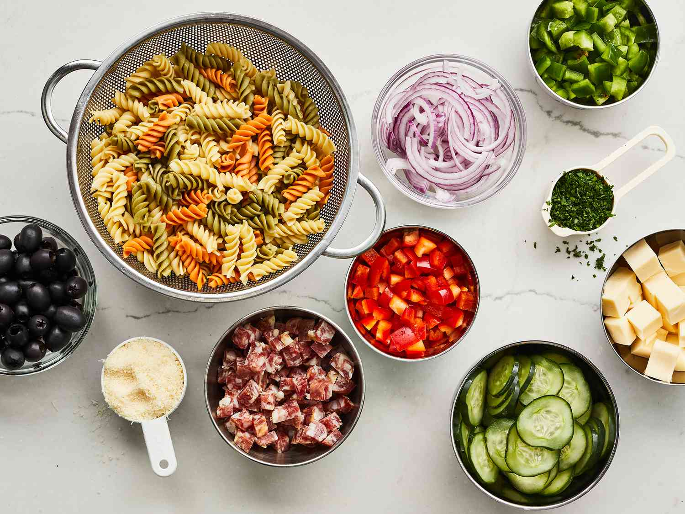

Homepage
Pasta Salad Recipe

Description
Looking for a crowd-pleasing pasta salad recipe with a homemade pasta salad dressing that everyone will love? You've come to the right place! This simple recipe combines pasta, veggies, cheese, and pepperoni with a tangy dressing that makes the dish impossible to resist.
Ingredients:
- 1 (8 ounce) package uncooked tri-color rotini pasta
- 6 ounces pepperoni sausage, diced
- 6 ounces provolone cheese, cubed
- 1 medium red onion, very thinly sliced and cut into 1-inch pieces
- 1 small cucumber, thinly sliced
Steps:
- Gather all your ingredients.
- Bring a large pot of lightly salted water to a boil. Add rotini and cook until tender yet firm to the bite, 8 to 10 minutes. Drain, rinse with cold water, and drain again. .
- Transfer drained, cooked pasta to a large bowl. Add pepperoni, provolone cheese, red onion, cucumber, bell peppers, olives, parsley, and Parmesan cheese. .
- Mix olive oil, vinegar, garlic, basil, oregano, ground mustard, salt, and pepper for dressing in a jar with a lid. Seal the jar, and shake until well combined.
- Pour dressing over the pasta salad; toss until well coated. Serve immediately, or cover and chill in the refrigerator for up to 8 hours before serving.